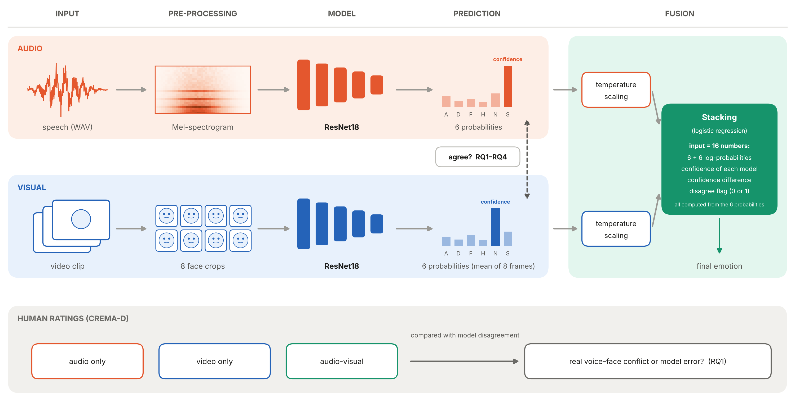
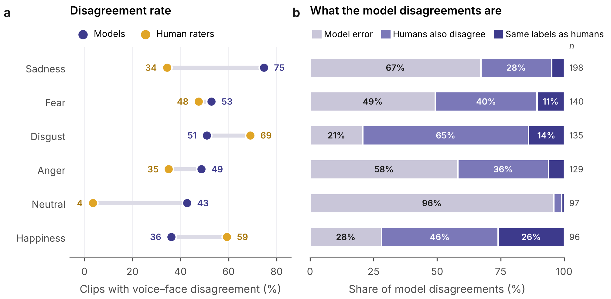
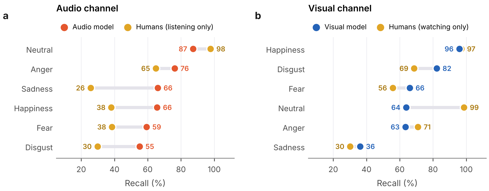
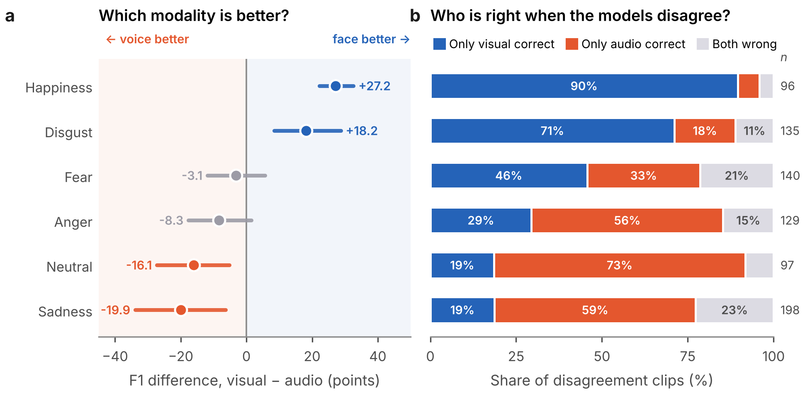
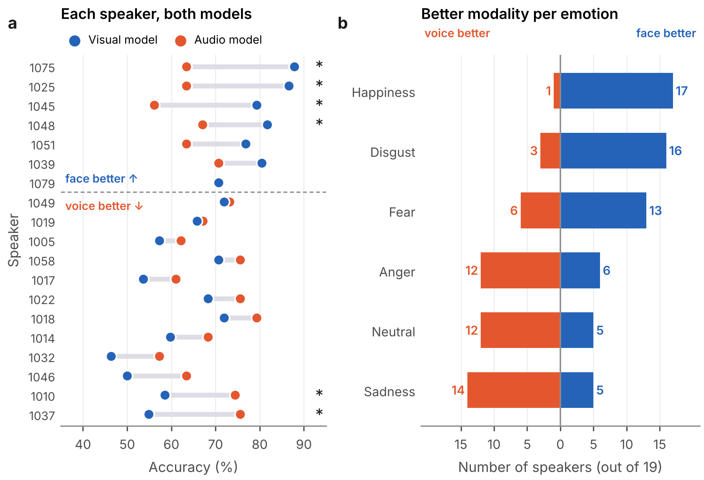
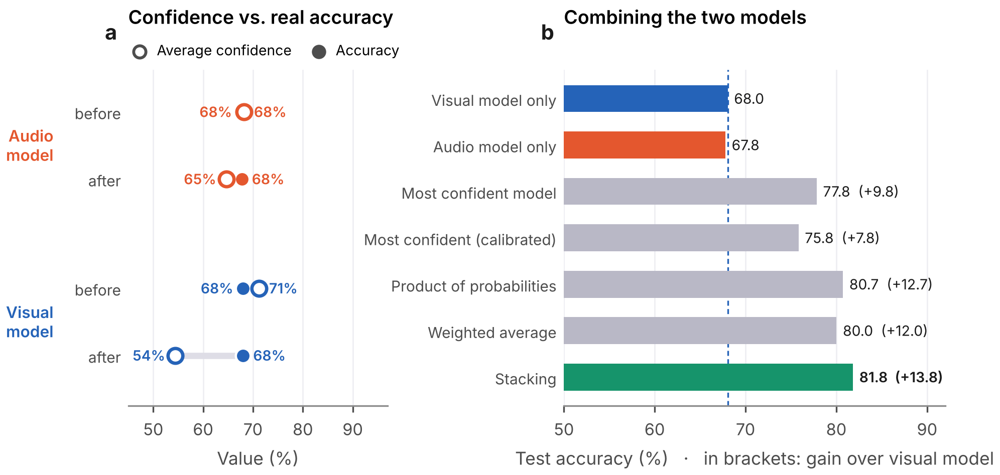

Two emotion recognition models listen and watch the same actors. Half of the time they give different answers. We asked why, and whether that disagreement can be useful.
University of Oulu, Finland
We trained a voice model and a face model on CREMA-D. Both were right about two thirds of the time, yet they disagreed on 51% of the test clips. Human ratings show that less than half of these disagreements are real voice–face conflicts; the rest are model mistakes. Each modality has its own strengths (the face for happiness and disgust, the voice for sadness), and a small fusion model that knows when the two disagree reached 81.8%, better than people who both saw and heard the actors.
When people express an emotion, the face and the voice do not always say the same thing. Most multimodal systems quietly assume that they do.
We trained two models with exactly the same design (ResNet18): one on speech Mel-spectrograms, one on face images. They were tested on 19 actors they had never seen. Then we looked at the clips where they disagreed.
CREMA-D makes this possible because every clip was rated by people who only listened, only watched, or did both. So for each disagreement we can ask: did humans also perceive two different emotions, or did one model simply make a mistake?

The two models were almost equally accurate (audio 67.8%, visual 68.0%), yet they predicted different emotions for 795 of 1,552 test clips.
A model disagreement is not the same as a voice–face conflict. Only 46.5% of the disagreements happened on clips where human raters also heard and saw different emotions. The other 53.5% were plain model errors.
It depends a lot on the emotion. For neutral clips, almost every disagreement was a model error. For disgust and happiness, most were real conflicts: people who only listened often could not hear what people who only watched could clearly see.

The audio model was fairly even across emotions (F1 between 61% and 75%). The visual model was not: it recognised almost every happy face but struggled with sad ones.
Human raters who only watched also found sadness the hardest emotion, so this is not only a weakness of the model: sadness is often simply hard to see in a face.


Visual accuracy ranged from 46% to 88% between speakers. And a speaker who was easy to read from the face was not necessarily easy to read from the voice (Spearman ρ = 0.06).
Some patterns were shared by almost everyone (happiness from the face, sadness from the voice), but anger and fear depended on the person. These differences were not clearly explained by gender or age.

Both final models were well calibrated, so their confidence could be trusted. A small stacking model (a logistic regression on 16 numbers: both models' log-probabilities, the confidence of each model, their difference and a disagree flag) learned on the validation speakers which model to believe.
The whole gain came from the clips where the models disagreed. There, the visual model alone was right 42.6% of the time, stacking 70.8%. The fusion learned which model to trust.
| Method | Accuracy | Gain over visual | On disagreements |
|---|---|---|---|
| Visual model only | 68.0% | – | 42.6% |
| Audio model only | 67.8% | −0.3 | 42.1% |
| Most confident model | 77.8% | +9.8 | 61.8% |
| Product of probabilities | 80.7% | +12.7 | 67.4% |
| Stacking | 81.8% | +13.8 (95% CI 9.4–17.9) | 70.8% |
Stacking was also better than the human audio-visual ratings (McNemar p = 1e-5), and stayed at 82.0% in a leave-one-speaker-out check. If the right model were always chosen, accuracy would be 89.6%, so there is still room for better fusion.
